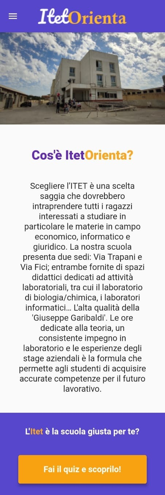
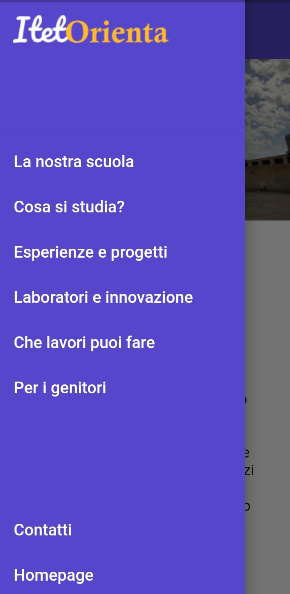
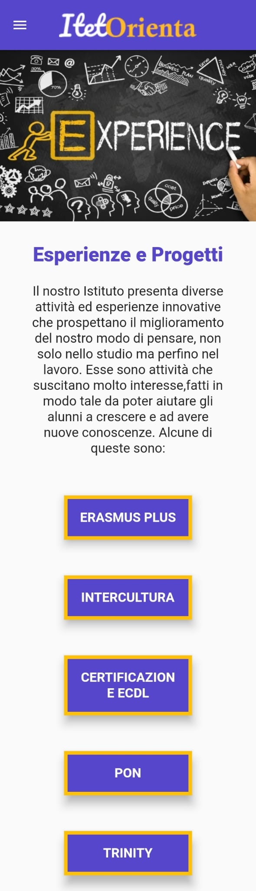

Itet Orienta
App vetrina Android / iOS / Web
Il Progetto
Itet Orienta è un'applicazione vetrina cross-platform progettata per promuovere e presentare l'Istituto Tecnico Economico e Tecnologico "G. Garibaldi" di Marsala. L'obiettivo primario dell'app è quello di guidare le famiglie e gli studenti delle scuole secondarie di primo grado nella scelta del percorso di studi superiore, facilitando l'orientamento scolastico.
Il progetto è stato sviluppato e presentato in occasione del progetto PON "Sviluppo Creativo", svoltosi all'interno dell'istituto stesso.
Tecnologie Utilizzate
- Flutter Framework
- Dart Programming Language
- Android Studio IDE
- Figma (UI/UX Mockups)
- GIMP (Grafica e Assets)
Caratteristiche Principali
- Accesso libero e senza autenticazione obbligatoria
- Sezioni informative strutturate per indirizzi di studio
- Integrazione diretta per chiamate telefoniche e email di segreteria
- Interfaccia moderna e fluida ottimizzata per dispositivi mobili
Screenshot Applicazione


